Using neural networks to parameterize advection in L96
Contents
Using neural networks to parameterize advection in L96¶
%matplotlib inline
import math
import matplotlib.pyplot as plt
import numpy as np
from IPython.display import HTML
from L96_model import (
L96,
RK2,
RK4,
EulerFwd,
L96_eq1_xdot,
integrate_L96_2t,
)
from matplotlib.animation import FuncAnimation
time_method = EulerFwd
Introduction¶
We are only going to use the single equation model from Lorenz (1996), or equation 3.1:
The reason we do this is because the advection term has a much larger control on the stability of the system than the scale-interaction term. It is fairly difficult to learn a model for the sub-grid scale term that causes L96 to go unstable so long as the timestep is sufficient to keep the advection term stable.
We want to to look into the stability of a learned parameterization, but to explore the stability in more detail we are going to focus on learning a neural-network for the advection.
It turns out this is rather challening, despite some early indications that it would be easy while I was still learning how to do everything!
Building a 1d and 2d version of the single-equation L96 model:¶
The ‘1d’ in time, or advectionless version of L96 reduces to:
the steady state solution is simply:
and the time-dependent solution is an exponential:
We are going to generate both 2d (w/ advection) and 1d (w/o advection) versions of the L96 model. The 2d model will then be used as training data to build a non-local neural network that can reproduce the effect of including the advection term.
# - This is a standard GCM class including a polynomial parameterization in rhs of equation for tendency.
# In this experiment we will not be using the parameterization in this class but have left it for generality.
class GCM:
def __init__(self, F, parameterization, time_stepping=time_method):
self.F = F
self.parameterization = parameterization
self.time_stepping = time_stepping
def rhs(self, X, param):
return L96_eq1_xdot(X, self.F) + self.parameterization(param, X, self.F)
def __call__(self, X0, dt, nt, param=[0]):
# X0 - initial conditions, dt - time increment, nt - number of forward steps to take
# param - parameters of our closure
time, hist, X = (
dt * np.arange(nt + 1),
np.zeros((nt + 1, len(X0))) * np.nan,
X0.copy(),
)
hist[0] = X
for n in range(nt):
X = self.time_stepping(self.rhs, dt, X, param)
hist[n + 1], time[n + 1] = X, dt * (n + 1)
return hist, time
# - This is the same as the GCM with one notable exception.
# We have set the advection flag to False in the RHS of the L96 equation.
class GCM_1d:
def __init__(self, F, parameterization, time_stepping=time_method):
self.F = F
self.parameterization = parameterization
self.time_stepping = time_stepping
def rhs(self, X, param):
return L96_eq1_xdot(X, self.F, advect=False) + self.parameterization(
param, X, self.F
)
def __call__(self, X0, dt, nt, param=[0]):
# X0 - initial conditions, dt - time increment, nt - number of forward steps to take
# param - parameters of our closure
time, hist, X = (
dt * np.arange(nt + 1),
np.zeros((nt + 1, len(X0))) * np.nan,
X0.copy(),
)
hist[0] = X
for n in range(nt):
X = self.time_stepping(self.rhs, dt, X, param)
hist[n + 1], time[n + 1] = X, dt * (n + 1)
return hist, time
Sample configuration¶
First we will run the 2d and 1d version of the model with a modest forcing of $F=10$.
We are going to try to simulate the effect of climate model drift on parameter space by running the same model but with $F=100$.
# Chose a modest forcing and simulate for 100 cycles
Forcing, dt, T = 10, 0.001, 10
Forcing_x10 = Forcing * 10
# Choose an random set of initial conditions
b = 5
init_cond = b * np.random.randn(8)
# ----------------------------------------------------------------
# We create the template 2d GCM here with the polynomial parameterization
# this model will be used to generate training data to learn the advection term.
naive_parameterization = lambda param, X, F: np.polyval(param, X)
gcm_2d = GCM(Forcing, naive_parameterization)
# ----------------------------------------------------------------
# We also create a super GCM for simulation with the forcing of 100.
# This will be used as the truth when we test the ability of the 1d model with the neural network to
# work outside of the parmameter space it was trained.
gcm_2d_x10 = GCM(Forcing_x10, naive_parameterization)
# ----------------------------------------------------------------
# Finally,we build the 1d GCM including the polynomial parameterization,
# and we create the corresponding super GCM with forcing squared.
gcm_1d = GCM_1d(Forcing, naive_parameterization)
gcm_1d_x10 = GCM_1d(Forcing_x10, naive_parameterization)
# Running the 2d and 1d versions of the GCM and GCM with F=100 ("_x10")
x2d, t2d = gcm_2d(
init_cond,
dt,
int(T / dt),
[
0.0,
],
)
x2d_x10, t2d_x10 = gcm_2d_x10(
init_cond,
dt,
int(T / dt),
[
0.0,
],
)
x1d, t1d = gcm_1d(
init_cond,
dt,
int(T / dt),
[
0.0,
],
)
x1d_x10, t1d_x10 = gcm_1d_x10(
init_cond,
dt,
int(T / dt),
[
0.0,
],
)
/net2/bgr/anaconda3/envs/ML/lib/python3.7/site-packages/numpy/lib/polynomial.py:734: RuntimeWarning: invalid value encountered in multiply
y = y * x + p[i]
Metrics:¶
We are going to track the momentum and energy of L96 via the following metrics:
Energy:¶
These metrics are chosen to track the system. We are looking for a conservative property of the L96 system. It turns out in the single equation form of the L96 problem one of these two metrics is conserved by the advection process, which is the energy like term.
for tup in [2, T]:
F, ax = plt.subplots(1, 2, figsize=(10, 4))
a = ax.ravel()[0]
a.plot(t1d, np.sum(x1d, axis=1), label="1d", color="r", linewidth=2)
a.plot(t2d, np.sum(x2d, axis=1), label="2d", color="b", linewidth=2)
a.legend()
a.grid(True)
a.set_title("L96 momentum")
a.set_xlabel("t")
a.set_ylabel(r"$\sum_k X_k$")
a.set_xlim(0, tup)
a = ax.ravel()[1]
a.plot(t1d, np.sum(x1d**2, axis=1), label="1d", color="r", linewidth=2)
a.plot(t2d, np.sum(x2d**2, axis=1), label="2d", color="b", linewidth=2)
a.legend()
a.grid(True)
a.set_title("L96 energy")
a.set_xlabel("t")
a.set_ylabel(r"$\sum_k X_k^2$")
a.set_xlim(0, tup)
F.tight_layout();
Demo: Conservation of energy in L96¶
To demonstrate the conservation of energy in L96 advection we build a model with 0 forcing and 0 damping.
Note that the cyan line is an experiment only undergoing forcing by the advection term. The momentum is clearly not conserved, but the energy is (maybe not in the Euler Forward case…).
# Zero the forcing
Forcing_demo = 0
# Zero the damping via a linear parameterization term:
P_nodamp = [1.0, 0.0]
# Running the 2d and 1d versions of the GCM and GCM with squared forcing ("s")
gcm_2d_demo = GCM(Forcing_demo, naive_parameterization)
# The parameterization here is countering the decay term to demonstrate the conservation of this system
x2d_demo, t2d_demo = gcm_2d_demo(init_cond, dt, int(T / dt), P_nodamp)
for tup in [2, T]:
F, ax = plt.subplots(1, 2, figsize=(10, 4))
a = ax.ravel()[0]
a.plot(
t2d_demo,
np.sum(x2d_demo, axis=1),
label="2d, F=0 no damp",
color="c",
linewidth=2,
)
a.plot(t2d, np.sum(x2d, axis=1), label="2d, F=10", color="b", linewidth=2)
a.legend()
a.grid(True)
a.set_title("L96 momentum")
a.set_xlabel("t")
a.set_ylabel(r"$\sum_k X_k$")
a.set_xlim(0, tup)
a = ax.ravel()[1]
a.plot(
t2d_demo,
np.sum(x2d_demo**2, axis=1),
label="2d, F=0 no damp",
color="c",
linewidth=2,
)
a.plot(t2d, np.sum(x2d**2, axis=1), label="2d, F=10", color="b", linewidth=2)
a.legend()
a.grid(True)
a.set_title("L96 energy")
a.set_xlabel("t")
a.set_ylabel(r"$\sum_k X_k^2$")
a.set_xlim(0, tup)
F.tight_layout();
Building a dataset of advection tendencies to learn¶
In the next section we are going to create a dataset of advection tendencies to learn
N = 50000
X = []
Xm1 = []
Xm2 = []
Xp1 = []
Adv = []
# randomize the initial condition and run 1000 time-step spin up with the real world model
init_condr = 10 * np.random.randn(8)
x_2, _ = gcm_2d(
init_condr,
0.001,
1000,
[
0.0,
],
)
for ti in range(N):
# Set the initial condition from the spin up/2d model
init_condr_up = x_2[-1, :]
# Real world values
x_2, _ = gcm_2d(
init_condr_up,
0.001,
1,
[
0.0,
],
)
# Simple model values
x_1, _ = gcm_1d(
init_condr_up,
0.001,
1,
[
0.0,
],
)
# This is the difference in the tendency term due to neglecting 2d processes per time-step
Adv.append((x_2[-1, :] - x_1[-1, :]).ravel() / 0.001)
# Storing the state variable and its rolled forms for plotting and learning convenience
X.append(x_1[-1, :].ravel())
Xm1.append(np.roll(x_1[-1, :], 1).ravel())
Xm2.append(np.roll(x_1[-1, :], 2).ravel())
Xp1.append(np.roll(x_1[-1, :], -1).ravel())
X = np.array(X)
Xm1 = np.array(Xm1)
Xm2 = np.array(Xm2)
Xp1 = np.array(Xp1)
Adv = np.array(Adv)
Choosing a parameter to parameterize from¶
If we were simply looking at data and knew that the advection term was a missing force, we might start by looking at correlations with $X_k$ values, but we would quickly relize that this is not effective.
Even taking part of the actual advection term does not yield a useful feature parameter
plt.figure()
plt.plot(X, Adv, "k.")
plt.xlabel("$X_{k}$")
plt.ylabel("Advection")
plt.figure()
plt.plot(Xm1, Adv, "k.")
plt.xlabel("$X_{k-1}$")
plt.ylabel("Advection")
plt.figure()
plt.plot(Xp1, Adv, "k.")
plt.xlabel("$X_{k+1}$")
plt.ylabel("Advection")
plt.figure()
plt.plot(Xm2 - Xp1, Adv, "k.")
plt.xlabel("$X_{k-2}-X_{k+1}$")
plt.ylabel("Advection")
Text(0, 0.5, 'Advection')
Let’s now just assume that we knew the form of the advection term. We now get something that looks like a 1:1 linear relationship between the observed advection term and the correct feature parameter. It is not perfect because the values we are using for $X_k$ are not consistent with the RK4 time stepping (if we used forward Euler we would get a perfit fit).
# We are going to assume we know the feature variable that we need to train the model.
# However, because of sampling across a time-step we will not fit a perfect 1:1,
# we end up with something very close to 1:1, but we will use a higher order polynomial that will
# fail when used outside the training data.
plt.figure(figsize=(5, 4))
Feature = -Xm1 * (np.array(Xm2) - np.array(Xp1))
plt.plot(Feature, Adv, "r.")
plt.xlabel("$X_{k-1}(X_{k-2}-X_{k+1})$")
plt.ylabel("Advection tendency")
# Here use a 10th order polynomial that is it to the advection tendencies.
# This parameterization will probably fail when used outside of the training data.
P = np.polyfit(np.array(Feature).ravel(), np.array(Adv).ravel(), 1)
print("Fit (slope/bias): ", P)
FS = [-200, 200]
plt.plot(FS, np.polyval(P, FS), "g-", label="polynomial parameterization")
plt.plot(FS, FS, "k--", label="1:1")
plt.xlim(-200, 200)
plt.ylim(-200, 200)
plt.grid(True)
Fit (slope/bias): [ 1.0011617 -0.00620157]
# Create a new 1d GCM with a parameterization for the advection based on the known advection parameter
advection_parameterization = lambda param, X, F: np.polyval(
param, -np.roll(X, 1) * (np.roll(X, 2) - np.roll(X, -1))
)
gcm_1d_padv = GCM_1d(Forcing, advection_parameterization)
gcm_1d_padv_x10 = GCM_1d(Forcing_x10, advection_parameterization)
# Here is the 1d GCM with the learned advection via the linear parameterization
xplinear, tplinear = gcm_1d_padv(init_cond, dt, int(T / dt), P)
# And the same 1d GCM applied out of sample
xplinear_x10, tplinear_x10 = gcm_1d_padv_x10(init_cond, dt, int(T / dt), P)
/net2/bgr/anaconda3/envs/ML/lib/python3.7/site-packages/ipykernel_launcher.py:2: RuntimeWarning: overflow encountered in multiply
/net2/bgr/anaconda3/envs/ML/lib/python3.7/site-packages/numpy/lib/polynomial.py:734: RuntimeWarning: invalid value encountered in multiply
y = y * x + p[i]
def CompExps(Exp1, ExpN):
# Exp1 - reference experiment list
# ExpN - list of comparison experiments
try:
T1 = Exp1[0]
X1 = Exp1[1]
L1 = Exp1[2]
F, ax = plt.subplots(1, 2, figsize=(10, 4))
a = ax.ravel()[0]
a.plot(T1, np.sum(X1, axis=1), label=L1, color="k", linewidth=3)
a = ax.ravel()[1]
a.plot(T1, np.sum(X1**2, axis=1), label=L1, color="k", linewidth=3)
F2, ax2 = plt.subplots(1, figsize=(5, 4))
for Exp in ExpN:
TN = Exp[0]
XN = Exp[1]
LN = Exp[2]
a = ax.ravel()[0]
a.plot(TN, np.sum(XN, axis=1), label=LN, linewidth=2)
a = ax.ravel()[1]
a.plot(TN, np.sum(XN**2, axis=1), label=LN, linewidth=2)
_X = []
_Y = []
for ii in range(1, 100, 1):
_X.append(np.percentile(np.sum(X1[int(5 // dt) :] ** 2, axis=1), ii))
_Y.append(np.percentile(np.sum(XN[int(5 // dt) :] ** 2, axis=1), ii))
ax2.plot(_X, _Y, ".-", label=LN)
for ii in range(2):
a = ax.ravel()[ii]
a.legend()
a.grid(True)
ax[0].set(ylabel=r"$\sum_k X_k$", xlabel=r"$t$")
ax[1].set(ylabel=r"$\sum_k X_k^2$", xlabel=r"$t$")
F.tight_layout()
ax2.grid(True)
ax2.set(
xlabel="e 2d model",
ylabel="e 1d model w/ param",
title="q-q plot of energy in 2d and parameterized model",
)
LIM = np.nanmax(list(_X) + list(_Y))
ax2.set_xlim(0, LIM * 1.1)
ax2.set_ylim(0, LIM * 1.1)
ax2.plot([0, LIM], [0, LIM], "y-")
pass
except:
pass
CompExps(
[t2d, x2d, "2d"],
[
[tplinear, xplinear, "1d w/ linear"],
],
)
CompExps(
[t2d_x10, x2d_x10, "2d"],
[
[tplinear_x10, xplinear_x10, "1d w/ linear"],
],
)
/net2/bgr/anaconda3/envs/ML/lib/python3.7/site-packages/numpy/core/fromnumeric.py:87: RuntimeWarning: invalid value encountered in reduce
return ufunc.reduce(obj, axis, dtype, out, **passkwargs)
/net2/bgr/anaconda3/envs/ML/lib/python3.7/site-packages/ipykernel_launcher.py:13: RuntimeWarning: overflow encountered in square
del sys.path[0]
/net2/bgr/anaconda3/envs/ML/lib/python3.7/site-packages/ipykernel_launcher.py:26: RuntimeWarning: overflow encountered in square
/net2/bgr/anaconda3/envs/ML/lib/python3.7/site-packages/ipykernel_launcher.py:45: RuntimeWarning: All-NaN axis encountered
What if we chose the wrong feature?¶
It turns out you can find features that are approximately correct and build a decent model for the advection
# Now we use a feature that is wrong to train the model
plt.figure()
Feature = -(np.array(Xm2) - np.array(Xp1) * np.array(Xm1))
plt.plot(Feature, Adv, "r.")
plt.xlabel("$(X_{k-1}-X_{k+1})$")
plt.ylabel("Advection tendency/Forcing")
# Here use a 10th order polynomial that is it to the advection tendencies.
# This parameterization will probably fail when used outside of the training data.
P_wrong = np.polyfit(np.array(Feature).ravel(), np.array(Adv).ravel(), 1)
FS = np.sort(np.array(Feature).ravel())
plt.plot(FS, np.polyval(P_wrong, FS), "g-", label="polynomial parameterization");
# Create a new 1d GCM with a 2d parameterization
advection_parameterization_wrong = lambda param, X, F: np.polyval(
param, -(np.roll(X, 2) - np.roll(X, -1) * np.roll(X, 1))
)
gcm_1d_padv_wrong = GCM_1d(Forcing, advection_parameterization_wrong)
# Here is the 1d GCM with the learned advection via the 10th order polynomial
x_wrongp, t_wrongp = gcm_1d_padv_wrong(init_cond, dt, int(T / dt), P_wrong)
CompExps(
[t2d, x2d, "2d"],
[
[t_wrongp, x_wrongp, "1d w/ wrong linear"],
],
)
/net2/bgr/anaconda3/envs/ML/lib/python3.7/site-packages/ipykernel_launcher.py:2: RuntimeWarning: overflow encountered in multiply
/net2/bgr/anaconda3/envs/ML/lib/python3.7/site-packages/numpy/lib/polynomial.py:734: RuntimeWarning: invalid value encountered in multiply
y = y * x + p[i]
/net2/bgr/anaconda3/envs/ML/lib/python3.7/site-packages/ipykernel_launcher.py:26: RuntimeWarning: overflow encountered in square
/net2/bgr/anaconda3/envs/ML/lib/python3.7/site-packages/ipykernel_launcher.py:31: RuntimeWarning: overflow encountered in square
Using the wrong feature gave us a very unstable model with advection that does not work.
In the following, we will try to learn the advection from a neural network. This result shows that we need to do something quite skillful to have a stable system.
Using the 3-layer non-local neural network¶
Now we can forget about neading to know the right form of the advection term. We are instead just going to throw the information from the advection scheme to the non-local neural network and let it learn the advection for itself.
These follow the templates from the exercise led by Janni in week 4.
I’m quite new to neural networks, so please let me know if you see any obvious mistakes in my approach!
import torch
import torch.nn.functional as F
import torch.utils.data as Data
import torchvision
from sklearn.metrics import r2_score
from torch import nn, optim
from torch.autograd import Variable
from torch_lr_finder import LRFinder
np.random.seed(14) # For reproducibility
torch.manual_seed(14) # For reproducibility
<torch._C.Generator at 0x2b6962fcb830>
I’m going to start by scaling the data so that it is approximately order 1.¶
It looks like we can scaling $X$ and the advection with the forcing and forcing squared, respectively (we will come back to this assumption).
plt.figure()
plt.plot(X, Adv, "k.")
plt.xlabel("$X_k$")
plt.ylabel("$Adv_k$")
X_F = X / Forcing
Adv_F = Adv / Forcing**2
print("Advection RMS:", np.sqrt(np.mean(Adv**2)))
print("X RMS:", np.sqrt(np.mean(X**2)))
plt.figure()
plt.plot(X_F, Adv_F, "k.")
plt.xlabel("$X_k/F$")
plt.ylabel("$Adv_k/F^2$")
print("Scaled Advection RMS:", np.sqrt(np.mean(Adv_F**2)))
print("Scaled X RMS:", np.sqrt(np.mean(X_F**2)))
Advection RMS: 29.757755154501183
X RMS: 5.14384104405241
Scaled Advection RMS: 0.2975775515450118
Scaled X RMS: 0.514384104405241
# Split into 80% training and 20% testing.
L = int(len(X) * 0.8)
# Create non local training data
# Define a data loader (8 inputs, 8 outputs)
# Define our X,Y pairs (state, subgrid tendency) for the linear regression local network.local_torch_dataset = Data.TensorDataset(
torch_dataset = Data.TensorDataset(
torch.from_numpy(np.array(X_F[:L])).double(),
torch.from_numpy(np.array(Adv_F[:L])).double(),
)
BATCH_SIZE = 1024 # Number of sample in each batch
loader = Data.DataLoader(dataset=torch_dataset, batch_size=BATCH_SIZE, shuffle=True)
print("N training data: ", len(X_F[:L]))
N training data: 40000
print("N testing data: ", len(X_F[L:]))
# Define a test dataloader (8 inputs, 8 outputs)
torch_dataset_test = Data.TensorDataset(
torch.from_numpy(np.array(X_F[L:])).double(),
torch.from_numpy(np.array(Adv_F[L:])).double(),
)
loader_test = Data.DataLoader(
dataset=torch_dataset_test, batch_size=BATCH_SIZE, shuffle=True
)
N testing data: 10000
# define network structure in pytorch
import torch.nn.functional as FF
class Net_ANN(nn.Module):
def __init__(self):
super(Net_ANN, self).__init__()
self.linear1 = nn.Linear(8, 16) # 8 inputs, 16 neurons for first hidden layer
self.linear2 = nn.Linear(16, 16) # 16 neurons for second hidden layer
self.linear3 = nn.Linear(16, 8) # 8 outputs
# self.lin_drop = nn.Dropout(0.1) #regularization method to prevent overfitting.
def forward(self, x):
x = FF.relu(self.linear1(x))
x = FF.relu(self.linear2(x))
x = self.linear3(x)
return x
def train_model(net, criterion, trainloader, optimizer):
net.train()
test_loss = 0
for step, (batch_x, batch_y) in enumerate(trainloader): # for each training step
b_x = Variable(batch_x) # Inputs
b_y = Variable(batch_y) # outputs
if (
len(b_x.shape) == 1
): # If is needed to add a dummy dimension if our inputs are 1D (where each number is a different sample)
prediction = torch.squeeze(
net(torch.unsqueeze(b_x, 1))
) # input x and predict based on x
else:
prediction = net(b_x)
loss = criterion(prediction, b_y) # Calculating loss
optimizer.zero_grad() # clear gradients for next train
loss.backward() # backpropagation, compute gradients
optimizer.step() # apply gradients to update weights
def test_model(net, criterion, trainloader, optimizer, text="validation"):
net.eval() # Evaluation mode (important when having dropout layers)
test_loss = 0
with torch.no_grad():
for step, (batch_x, batch_y) in enumerate(
trainloader
): # for each training step
b_x = Variable(batch_x) # Inputs
b_y = Variable(batch_y) # outputs
if (
len(b_x.shape) == 1
): # If is needed to add a dummy dimension if our inputs are 1D (where each number is a different sample)
prediction = torch.squeeze(
net(torch.unsqueeze(b_x, 1))
) # input x and predict based on x
else:
prediction = net(b_x)
loss = criterion(prediction, b_y) # Calculating loss
test_loss = test_loss + loss.data.numpy() # Keep track of the loss
test_loss /= len(trainloader) # dividing by the number of batches
# print(len(trainloader))
print(text + " loss:", test_loss)
return test_loss
criterion = torch.nn.MSELoss() # MSE loss function
torch.manual_seed(14) # For reproducibility
nn_3l = Net_ANN().double()
n_epochs = 20 # Number of epocs
optimizer = optim.Adam(nn_3l.parameters(), lr=0.03)
validation_loss = list()
train_loss = list()
# time0 = time()
for epoch in range(1, n_epochs + 1):
train_model(nn_3l, criterion, loader, optimizer)
train_loss.append(test_model(nn_3l, criterion, loader, optimizer, "train"))
validation_loss.append(test_model(nn_3l, criterion, loader_test, optimizer))
plt.plot(train_loss, "b", label="training loss")
plt.plot(validation_loss, "r", label="validation loss")
plt.legend();
train loss: 0.027806309966000427
validation loss: 0.03338742759909256
train loss: 0.015522494623248423
validation loss: 0.01945873490935509
train loss: 0.012856452600687573
validation loss: 0.016529202653051904
train loss: 0.010475002558778923
validation loss: 0.013857635809177543
train loss: 0.010470859801775962
validation loss: 0.01409085770409745
train loss: 0.009852764356116992
validation loss: 0.014785889156426577
train loss: 0.00913809031773268
validation loss: 0.01342727545078215
train loss: 0.00919270964459333
validation loss: 0.013803081960084349
train loss: 0.009534602789943409
validation loss: 0.014028547249727883
train loss: 0.008257622734781454
validation loss: 0.011755548586476924
train loss: 0.00784493843756227
validation loss: 0.011168447715775572
train loss: 0.007871792340734592
validation loss: 0.01130734906272347
train loss: 0.007380950052883873
validation loss: 0.010690330300462274
train loss: 0.008794351166875134
validation loss: 0.013748586762050796
train loss: 0.007295006565764152
validation loss: 0.010455408186600668
train loss: 0.007191179282249977
validation loss: 0.009935888879747126
train loss: 0.008120742401893392
validation loss: 0.009830380056965777
train loss: 0.006651180017619401
validation loss: 0.009592899376623814
train loss: 0.006598480167422607
validation loss: 0.009244759604063502
train loss: 0.008256306487245586
validation loss: 0.011665069256014099
# The neural network does a pretty good job predicting the advection tendencies
preds22 = nn_3l(torch.from_numpy(np.array(X_F)).double())
plt.figure()
plt.plot(preds22.detach().numpy()[0:, 2], label="NN Predicted values")
plt.plot(Adv_F[:, 2], label="True values")
plt.legend()
plt.figure()
plt.plot(Adv_F[:, 2], preds22.detach().numpy()[0:, 2], "k.")
plt.xlabel("Actual")
plt.ylabel("Prediction")
pass
Xt = init_cond
Advr = -np.roll(Xt, 1) * (np.roll(Xt, 2) - np.roll(Xt, -1))
nnAdv = nn_3l(torch.from_numpy(np.array(Xt / Forcing)).double()).detach().numpy()
plt.figure()
plt.plot(Advr, "k-")
plt.plot(nnAdv * Forcing**2, "r-")
[<matplotlib.lines.Line2D at 0x2b696e697890>]
# - a GCM class including a neural network parameterization in rhs of equation for tendency
class GCM_network:
def __init__(self, F, network, time_stepping=time_method):
self.F = F
self.network = network
self.time_stepping = time_stepping
def rhs(self, X, param):
if self.network.linear1.in_features == 1:
X_torch = torch.from_numpy(X / self.F).double()
X_torch = torch.unsqueeze(X_torch, 1)
else:
X_torch = torch.from_numpy(np.expand_dims(X / self.F, 0)).double()
return L96_eq1_xdot(
X,
self.F + self.F**2 * np.squeeze(self.network(X_torch).data.numpy()),
advect=False,
) # Adding NN parameterization
def __call__(self, X0, dt, nt, param=[0]):
# X0 - initial conditions, dt - time increment, nt - number of forward steps to take
# param - parameters of our closure
time, hist, X = (
dt * np.arange(nt + 1),
np.zeros((nt + 1, len(X0))) * np.nan,
X0.copy(),
)
hist[0] = X
for n in range(nt):
X = self.time_stepping(self.rhs, dt, X, param)
hist[n + 1], time[n + 1] = X, dt * (n + 1)
return hist, time
# Run a test with the parameterization
gcm_nn = GCM_network(Forcing, nn_3l)
xnn, tnn = gcm_nn(init_cond, dt, int(T / (dt)), nn_3l)
gcm_nn_x10 = GCM_network(Forcing_x10, nn_3l)
xnn_x10, tnn_x10 = gcm_nn_x10(init_cond, dt, int(T / (dt)), nn_3l)
CompExps(
[t2d, x2d, "2d"],
[
[tnn, xnn, "1d w/ neural network"],
],
)
CompExps(
[t2d_x10, x2d_x10, "2d"],
[
[tnn_x10, xnn_x10, "1d w/ neural network"],
],
)
/net2/bgr/anaconda3/envs/ML/lib/python3.7/site-packages/numpy/core/fromnumeric.py:87: RuntimeWarning: invalid value encountered in reduce
return ufunc.reduce(obj, axis, dtype, out, **passkwargs)
/net2/bgr/anaconda3/envs/ML/lib/python3.7/site-packages/ipykernel_launcher.py:13: RuntimeWarning: overflow encountered in square
del sys.path[0]
def my_loss2(inpt, output, target):
# In which we add conservation of "momentum" to our loss function
loss = torch.mean(2 * (output - target) ** 2) + torch.mean(
torch.sum(output, axis=1) ** 2
)
return loss
def train_model2(net, criterion, trainloader, optimizer):
net.train()
test_loss = 0
for step, (batch_x, batch_y) in enumerate(trainloader): # for each training step
b_x = Variable(batch_x) # Inputs
b_y = Variable(batch_y) # outputs
if (
len(b_x.shape) == 1
): # If is needed to add a dummy dimension if our inputs are 1D (where each number is a different sample)
prediction = torch.squeeze(
net(torch.unsqueeze(b_x, 1))
) # input x and predict based on x
else:
prediction = net(b_x)
loss = criterion(b_x, prediction, b_y) # Calculating loss
optimizer.zero_grad() # clear gradients for next train
loss.backward() # backpropagation, compute gradients
optimizer.step() # apply gradients to update weights
def test_model2(net, criterion, trainloader, optimizer, text="validation"):
net.eval() # Evaluation mode (important when having dropout layers)
test_loss = 0
with torch.no_grad():
for step, (batch_x, batch_y) in enumerate(
trainloader
): # for each training step
b_x = Variable(batch_x) # Inputs
b_y = Variable(batch_y) # outputs
if (
len(b_x.shape) == 1
): # If is needed to add a dummy dimension if our inputs are 1D (where each number is a different sample)
prediction = torch.squeeze(
net(torch.unsqueeze(b_x, 1))
) # input x and predict based on x
else:
prediction = net(b_x)
loss = criterion(b_x, prediction, b_y) # Calculating loss
test_loss = test_loss + loss.data.numpy() # Keep track of the loss
test_loss /= len(trainloader) # dividing by the number of batches
# print(len(trainloader))
print(text + " loss:", test_loss)
return test_loss
torch.manual_seed(14) # For reproducibility
nn_3l_loss2 = Net_ANN().double()
n_epochs = 30 # Number of epocs
optimizer = optim.Adam(nn_3l_loss2.parameters(), lr=0.02)
validation_loss = list()
train_loss = list()
# time0 = time()
for epoch in range(1, n_epochs + 1):
train_model2(nn_3l_loss2, my_loss2, loader, optimizer)
train_loss.append(test_model2(nn_3l_loss2, my_loss2, loader, optimizer, "train"))
validation_loss.append(test_model2(nn_3l_loss2, my_loss2, loader_test, optimizer))
plt.plot(train_loss, "b", label="training loss")
plt.plot(validation_loss, "r", label="validation loss")
plt.legend();
train loss: 0.14525318805451148
validation loss: 0.1410566018642861
train loss: 0.11146990705605828
validation loss: 0.11152683341702804
train loss: 0.08531280002050026
validation loss: 0.09315141423013254
train loss: 0.07350083683860467
validation loss: 0.08130148452968912
train loss: 0.060556589378488845
validation loss: 0.06770017477534296
train loss: 0.0545573680262641
validation loss: 0.06238966749914634
train loss: 0.050780309414355296
validation loss: 0.05979021465004297
train loss: 0.04830985343262146
validation loss: 0.05491476056832688
train loss: 0.0480117902578755
validation loss: 0.054550888025179975
train loss: 0.045557077204676784
validation loss: 0.052404215284515
train loss: 0.050795559467502985
validation loss: 0.05659772770024404
train loss: 0.043447985506593026
validation loss: 0.050814080589169176
train loss: 0.04332648821360594
validation loss: 0.05082919783894968
train loss: 0.04152745776617327
validation loss: 0.04934856531269395
train loss: 0.04228600111932894
validation loss: 0.05075331715197908
train loss: 0.04081403214275737
validation loss: 0.049166099893600775
train loss: 0.042017039150924196
validation loss: 0.05055867242901894
train loss: 0.0388573569100151
validation loss: 0.047429077822179644
train loss: 0.03924729257572566
validation loss: 0.04635967447739835
train loss: 0.03721441913969023
validation loss: 0.046089973781002984
train loss: 0.03664954307061588
validation loss: 0.04381018234609724
train loss: 0.03612152093289295
validation loss: 0.04325730204969782
train loss: 0.03672217804704179
validation loss: 0.04261377961629582
train loss: 0.04107314280663554
validation loss: 0.049837445993914375
train loss: 0.03598219975285104
validation loss: 0.04284779869850219
train loss: 0.03618003195501468
validation loss: 0.04305999917062621
train loss: 0.03578595220480272
validation loss: 0.043565867664599835
train loss: 0.04257359319926104
validation loss: 0.05030835448424163
train loss: 0.03554018310062777
validation loss: 0.04404699472502314
train loss: 0.03911672239874609
validation loss: 0.04724114794540808
# The neural network does a pretty good job predicting the advection tendencies
preds22o = nn_3l(torch.from_numpy(np.array(X_F)).double())
preds22 = nn_3l_loss2(torch.from_numpy(np.array(X_F)).double())
plt.figure()
plt.plot(preds22.detach().numpy()[0:, 2], label="NN Predicted values")
plt.plot(Adv_F[:, 2], label="True values")
plt.legend()
plt.figure()
plt.plot(Adv_F[:, 2], preds22.detach().numpy()[0:, 2], "k.")
plt.xlabel("Actual")
plt.ylabel("Prediction")
plt.figure()
plt.plot(np.sum(preds22o.detach().numpy(), axis=1), "r.")
plt.plot(np.sum(preds22.detach().numpy(), axis=1), "k.")
plt.ylabel("Prediction momentum")
Xt = init_cond
Advr = -np.roll(Xt, 1) * (np.roll(Xt, 2) - np.roll(Xt, -1))
nnAdv = nn_3l_loss2(torch.from_numpy(np.array(Xt / Forcing)).double()).detach().numpy()
plt.figure()
plt.plot(Advr, "k-", label="actual")
plt.plot(nnAdv * Forcing**2, "r-", label="predicted")
pass;
 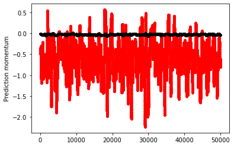
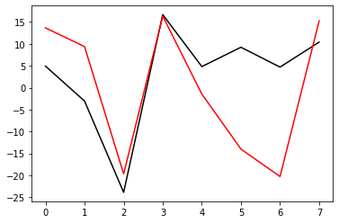
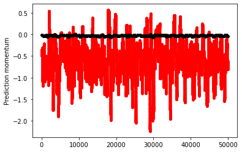
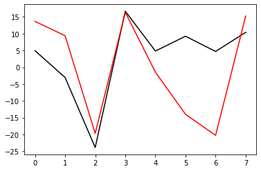
gcm_nn2 = GCM_network(Forcing, nn_3l_loss2)
xnn2, tnn2 = gcm_nn2(init_cond, dt, int(T / (dt)), nn_3l_loss2)
gcm_nn2_x10 = GCM_network(Forcing_x10, nn_3l_loss2)
xnn2_x10, tnn2_x10 = gcm_nn2_x10(init_cond, dt, int(T / (dt)), nn_3l_loss2)
CompExps(
[t2d, x2d, "2d"],
[
[tnn2, xnn2, "1d w/ NN conserving momentum"],
],
)
 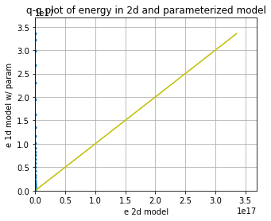
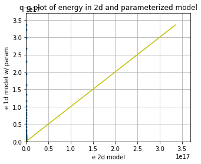
CompExps(
[t2d_x10, x2d_x10, "2d"],
[
[tnn2_x10, xnn2_x10, "1d w/ NN conserving momentum"],
],
)
/net2/bgr/anaconda3/envs/ML/lib/python3.7/site-packages/numpy/core/fromnumeric.py:87: RuntimeWarning: invalid value encountered in reduce
return ufunc.reduce(obj, axis, dtype, out, **passkwargs)
/net2/bgr/anaconda3/envs/ML/lib/python3.7/site-packages/ipykernel_launcher.py:13: RuntimeWarning: overflow encountered in square
del sys.path[0]
How about with some regularization?¶
torch.manual_seed(14) # For reproducibility
nn_3l_loss3 = Net_ANN().double()
n_epochs = 50 # Number of epocs
optimizer = optim.Adam(nn_3l_loss3.parameters(), lr=0.01, weight_decay=0.01)
validation_loss = list()
train_loss = list()
# time0 = time()
for epoch in range(1, n_epochs + 1):
train_model2(nn_3l_loss3, my_loss2, loader, optimizer)
train_loss.append(test_model2(nn_3l_loss3, my_loss2, loader, optimizer, "train"))
validation_loss.append(test_model2(nn_3l_loss3, my_loss2, loader_test, optimizer))
plt.plot(train_loss, "b", label="training loss")
plt.plot(validation_loss, "r", label="validation loss")
plt.legend();
train loss: 0.16579065029393938
validation loss: 0.15499097681366703
train loss: 0.14926573665192572
validation loss: 0.14323137518692666
train loss: 0.1406335224452818
validation loss: 0.13597032714808552
train loss: 0.1308623576390843
validation loss: 0.1291846466497783
train loss: 0.12723074242902543
validation loss: 0.12605576221934142
train loss: 0.1264709952978287
validation loss: 0.1265513443892068
train loss: 0.12553793742702213
validation loss: 0.12488535092134101
train loss: 0.12116740130915507
validation loss: 0.12205285224708384
train loss: 0.11890633967669606
validation loss: 0.12017104844007243
train loss: 0.11651745269669544
validation loss: 0.11806960875048114
train loss: 0.11637859661436176
validation loss: 0.11755907672259555
train loss: 0.11370023795179225
validation loss: 0.11597579887099511
train loss: 0.11262012142059126
validation loss: 0.11448235950936944
train loss: 0.10943062368938303
validation loss: 0.11293791241020668
train loss: 0.1093506147575543
validation loss: 0.11236849339400481
train loss: 0.1092413560044713
validation loss: 0.11200517794080982
train loss: 0.10849948399453939
validation loss: 0.11135068112202946
train loss: 0.10873584185669345
validation loss: 0.1118621623609177
train loss: 0.109244227962944
validation loss: 0.11150678107189511
train loss: 0.10835259211714536
validation loss: 0.11100944143750194
train loss: 0.10751370578918067
validation loss: 0.1108096779479006
train loss: 0.10881125286934601
validation loss: 0.11125738332964477
train loss: 0.10802770798426842
validation loss: 0.11118624133411206
train loss: 0.10883009101575318
validation loss: 0.11218982369755703
train loss: 0.10749454846824591
validation loss: 0.11026214967271215
train loss: 0.10773480841023649
validation loss: 0.10999238987257114
train loss: 0.10737957821238826
validation loss: 0.10976678733420502
train loss: 0.10840857669600704
validation loss: 0.11108813857144081
train loss: 0.10781468081131469
validation loss: 0.11004268120820718
train loss: 0.10798929069895909
validation loss: 0.11017154852921389
train loss: 0.10825804526210495
validation loss: 0.11062005411857519
train loss: 0.10752742779034889
validation loss: 0.10977383570764507
train loss: 0.10761512319825553
validation loss: 0.11019296561465386
train loss: 0.10846184296608483
validation loss: 0.1107113061754846
train loss: 0.10778240502780176
validation loss: 0.11037925040106526
train loss: 0.10817761969636852
validation loss: 0.11053716243557174
train loss: 0.10819117919006878
validation loss: 0.11028960896797824
train loss: 0.10802979981880986
validation loss: 0.11086539665876052
train loss: 0.10764467769049738
validation loss: 0.1103707942450316
train loss: 0.10765175340105873
validation loss: 0.1105452215911713
train loss: 0.1067295856041229
validation loss: 0.10948507369922833
train loss: 0.10773255636120867
validation loss: 0.1105383319695717
train loss: 0.1068376575795658
validation loss: 0.10974985432344242
train loss: 0.10784456294685082
validation loss: 0.11058008116552472
train loss: 0.10819840629612953
validation loss: 0.11062554004008536
train loss: 0.1076718355539343
validation loss: 0.11031751768502143
train loss: 0.10704220000630382
validation loss: 0.11003201298611529
train loss: 0.1082281724344066
validation loss: 0.1100188701437345
train loss: 0.10821584573101276
validation loss: 0.11053537475891262
train loss: 0.10769905626636227
validation loss: 0.11018133275611738
# The neural network does a pretty good job predicting the advection tendencies
preds22o = nn_3l(torch.from_numpy(np.array(X_F)).double())
preds22 = nn_3l_loss3(torch.from_numpy(np.array(X_F)).double())
plt.figure()
plt.plot(preds22.detach().numpy()[0:, 2], label="NN Predicted values")
plt.plot(Adv_F[:, 2], label="True values")
plt.legend()
plt.figure()
plt.plot(Adv_F[:, 2], preds22.detach().numpy()[0:, 2], "k.")
plt.xlabel("Actual")
plt.ylabel("Prediction")
plt.figure()
plt.plot(np.sum(preds22o.detach().numpy(), axis=1), "r.")
plt.plot(np.sum(preds22.detach().numpy(), axis=1), "k.")
plt.ylabel("Prediction momentum")
Xt = init_cond
Advr = -np.roll(Xt, 1) * (np.roll(Xt, 2) - np.roll(Xt, -1))
nnAdv = nn_3l_loss3(torch.from_numpy(np.array(Xt / Forcing)).double()).detach().numpy()
plt.figure()
plt.plot(Advr, "k-", label="actual")
plt.plot(nnAdv * Forcing**2, "r-", label="predicted")
pass;


gcm_nn3 = GCM_network(Forcing, nn_3l_loss3)
xnn3, tnn3 = gcm_nn3(init_cond, dt, int(T / (dt)), nn_3l_loss3)
gcm_nn3_x10 = GCM_network(Forcing_x10, nn_3l_loss3)
xnn3_x10, tnn3_x10 = gcm_nn3_x10(init_cond, dt, int(T / (dt)), nn_3l_loss3)
CompExps(
[t2d, x2d, "2d"],
[
[tnn3, xnn3, "1d w/ NN momentum reg."],
[t1d, x1d, "1d "],
],
)
CompExps(
[t2d, x2d, "2d"],
[
[tnn3_x10, xnn3_x10, "1d w/ NN momentum reg."],
],
)
Try a different scaling term¶
Could scaling with the Forcing be the issue?
# Use the advection tendencies, splitting into 80% training and 20% testing.
L = int(len(X) * 0.8)
print(L)
ScX = np.sqrt(np.mean(X**2))
X_S = X / ScX
ScA = np.sqrt(np.mean(Adv**2))
Adv_S = Adv / ScA
# Create non local training data
# Define a data loader (8 inputs, 8 outputs)
# Define our X,Y pairs (state, subgrid tendency) for the linear regression local network.local_torch_dataset = Data.TensorDataset(
torch_dataset = Data.TensorDataset(
torch.from_numpy(np.array(X_S[:L])).double(),
torch.from_numpy(np.array(Adv_S[:L])).double(),
)
BATCH_SIZE = 1024 # Number of sample in each batch
loader = Data.DataLoader(dataset=torch_dataset, batch_size=BATCH_SIZE, shuffle=True)
# Define a test dataloader (8 inputs, 8 outputs)
torch_dataset_test = Data.TensorDataset(
torch.from_numpy(np.array(X_S[L:])).double(),
torch.from_numpy(np.array(Adv_S[L:])).double(),
)
loader_test = Data.DataLoader(
dataset=torch_dataset_test, batch_size=BATCH_SIZE, shuffle=True
)
40000
torch.manual_seed(14) # For reproducibility
nn_3l_loss4 = Net_ANN().double()
n_epochs = 50 # Number of epocs
optimizer = optim.Adam(nn_3l_loss4.parameters(), lr=0.01, weight_decay=0.02)
validation_loss = list()
train_loss = list()
# time0 = time()
for epoch in range(1, n_epochs + 1):
train_model2(nn_3l_loss4, my_loss2, loader, optimizer)
train_loss.append(test_model2(nn_3l_loss4, my_loss2, loader, optimizer, "train"))
validation_loss.append(test_model2(nn_3l_loss4, my_loss2, loader_test, optimizer))
plt.plot(train_loss, "b", label="training loss")
plt.plot(validation_loss, "r", label="validation loss")
plt.legend();
train loss: 1.3681752714328994
validation loss: 1.391962668717579
train loss: 0.9011502772068825
validation loss: 0.9852437970362267
train loss: 0.7278986822420841
validation loss: 0.7862180538315828
train loss: 0.6446226345652313
validation loss: 0.6979588712059025
train loss: 0.5845171826599014
validation loss: 0.6539705207831646
train loss: 0.5411244303508285
validation loss: 0.611328752191106
train loss: 0.5240889602271969
validation loss: 0.591975926057591
train loss: 0.503873132638851
validation loss: 0.5663706685477654
train loss: 0.4969634789969839
validation loss: 0.5652073673117425
train loss: 0.4863031025558756
validation loss: 0.554563780751476
train loss: 0.48714229414121607
validation loss: 0.5490252496857627
train loss: 0.4823786916274545
validation loss: 0.549035764776083
train loss: 0.47470288877279276
validation loss: 0.5384986656774667
train loss: 0.4664004360050513
validation loss: 0.5353526954061639
train loss: 0.466273914893329
validation loss: 0.5312159977911647
train loss: 0.4637676044999569
validation loss: 0.5293774471935317
train loss: 0.4636053955482845
validation loss: 0.5318335309850533
train loss: 0.45907616134074153
validation loss: 0.5266327854299482
train loss: 0.4599338504640766
validation loss: 0.524859056097153
train loss: 0.45650925560609323
validation loss: 0.5249809883473238
train loss: 0.45447583060932273
validation loss: 0.5240302613622312
train loss: 0.4547546879632602
validation loss: 0.5234226274352541
train loss: 0.4555010687900599
validation loss: 0.524926366377686
train loss: 0.4567752409763445
validation loss: 0.5263799870347527
train loss: 0.45041894388031667
validation loss: 0.5230380802108899
train loss: 0.44971737185061056
validation loss: 0.5176146211650194
train loss: 0.4498828181433244
validation loss: 0.5227103962878477
train loss: 0.45923432748849286
validation loss: 0.5271313196686273
train loss: 0.4508726731276565
validation loss: 0.5149366365552864
train loss: 0.4528898941121601
validation loss: 0.5164456187678336
train loss: 0.45036780756094386
validation loss: 0.5195869888728157
train loss: 0.4478508445608222
validation loss: 0.5126732121426368
train loss: 0.4474702318118676
validation loss: 0.5186696047391426
train loss: 0.4482519434328843
validation loss: 0.5138212655099671
train loss: 0.4459438996632693
validation loss: 0.5140374623903662
train loss: 0.4492847761713962
validation loss: 0.511490699761972
train loss: 0.4469972125712842
validation loss: 0.5072574370824572
train loss: 0.4520560686351134
validation loss: 0.5216361766576283
train loss: 0.4487556237985043
validation loss: 0.5115091632949992
train loss: 0.44820548642022884
validation loss: 0.5105743516041678
train loss: 0.4437573740796334
validation loss: 0.5119884956136291
train loss: 0.44507885572689493
validation loss: 0.5102261508712223
train loss: 0.4450423390897466
validation loss: 0.5118603731750059
train loss: 0.4422894650263176
validation loss: 0.509608869033718
train loss: 0.44624078943184314
validation loss: 0.5013846412597388
train loss: 0.4483089145755102
validation loss: 0.5076318348617903
train loss: 0.44526027692848746
validation loss: 0.5114920727850925
train loss: 0.4480485962188806
validation loss: 0.5103037404247307
train loss: 0.44508534129568533
validation loss: 0.5058332568426158
train loss: 0.44380551679215297
validation loss: 0.5056495121869633
# The neural network does a pretty good job predicting the advection tendencies
preds22o = nn_3l_loss3(torch.from_numpy(np.array(X_S)).double())
preds22 = nn_3l_loss4(torch.from_numpy(np.array(X_S)).double())
plt.figure()
plt.plot(preds22.detach().numpy()[0:, 2], label="NN Predicted values")
plt.plot(Adv_S[:, 2], label="True values")
plt.legend()
plt.figure()
plt.plot(Adv_S[:, 2], preds22.detach().numpy()[0:, 2], "k.")
plt.xlabel("Actual")
plt.ylabel("Prediction")
plt.figure()
plt.plot(np.sum(preds22o.detach().numpy(), axis=1) * Forcing, "r.")
plt.plot(np.sum(preds22.detach().numpy(), axis=1) * ScA, "k.")
plt.ylabel("Prediction momentum")
Xt = init_cond
Advr = -np.roll(Xt, 1) * (np.roll(Xt, 2) - np.roll(Xt, -1))
nnAdv = nn_3l_loss4(torch.from_numpy(np.array(Xt / Forcing)).double()).detach().numpy()
plt.figure()
plt.plot(Advr, "k-", label="actual")
plt.plot(nnAdv * Forcing**2, "r-", label="predicted")
pass;
# - a GCM class including a neural network parameterization in rhs of equation for tendency
class GCM_network_S:
def __init__(self, F, network, time_stepping=time_method):
self.F = F
self.network = network
self.time_stepping = time_stepping
def rhs(self, X, param):
if self.network.linear1.in_features == 1:
X_torch = torch.from_numpy(X / ScX).double()
X_torch = torch.unsqueeze(X_torch, 1)
else:
X_torch = torch.from_numpy(np.expand_dims(X / ScX, 0)).double()
return L96_eq1_xdot(
X,
self.F + ScA * np.squeeze(self.network(X_torch).data.numpy()),
advect=False,
) # Adding NN parameterization
def __call__(self, X0, dt, nt, param=[0]):
# X0 - initial conditions, dt - time increment, nt - number of forward steps to take
# param - parameters of our closure
time, hist, X = (
dt * np.arange(nt + 1),
np.zeros((nt + 1, len(X0))) * np.nan,
X0.copy(),
)
hist[0] = X
for n in range(nt):
X = self.time_stepping(self.rhs, dt, X, param)
hist[n + 1], time[n + 1] = X, dt * (n + 1)
return hist, time
gcm_nn4 = GCM_network_S(Forcing, nn_3l_loss4)
xnn4, tnn4 = gcm_nn4(init_cond, dt, int(T / dt), nn_3l_loss4)
gcm_nn4_x10 = GCM_network_S(Forcing_x10, nn_3l_loss4)
xnn4_x10, tnn4_x10 = gcm_nn4_x10(init_cond, dt, int(T / dt), nn_3l_loss4)
CompExps(
[t2d, x2d, "2d"],
[
[tnn4, xnn4, "1d w/ rescaled NN mom."],
],
)


CompExps(
[t2d, x2d, "2d"],
[
[tnn4_x10, xnn4_x10, "1d w/ rescaled NN mom."],
],
)

def my_loss3(inpt, output, target):
# In which we replace conservation of "momentum" with conservation of "energy"
loss = torch.mean(2 * (output - target) ** 2) + WT * torch.mean(
torch.sum(inpt * output, axis=1) ** 2
)
return loss
WT = 1
torch.manual_seed(14) # For reproducibility
nn_3l_loss5 = Net_ANN().double()
n_epochs = 50 # Number of epocs
optimizer = optim.Adam(nn_3l_loss5.parameters(), lr=0.01)
validation_loss = list()
train_loss = list()
# time0 = time()
for epoch in range(1, n_epochs + 1):
train_model2(nn_3l_loss5, my_loss3, loader, optimizer)
train_loss.append(test_model2(nn_3l_loss5, my_loss3, loader, optimizer, "train"))
validation_loss.append(test_model2(nn_3l_loss5, my_loss3, loader_test, optimizer))
plt.plot(train_loss, "b", label="training loss")
plt.plot(validation_loss, "r", label="validation loss")
plt.legend();
train loss: 1.2826061494668313
validation loss: 1.3455059528678692
train loss: 0.9149025646754556
validation loss: 1.0997036069131914
train loss: 0.732444627481474
validation loss: 0.9384637310184555
train loss: 0.6379298918237817
validation loss: 0.8460253765953549
train loss: 0.5761035816953372
validation loss: 0.7604782247348131
train loss: 0.5383015088854007
validation loss: 0.7377350251595804
train loss: 0.5105438440157084
validation loss: 0.7314516144621489
train loss: 0.4855887124780443
validation loss: 0.7343960807804357
train loss: 0.48758971352170033
validation loss: 0.7347514783167745
train loss: 0.4594611358711118
validation loss: 0.6489331681669646
train loss: 0.4502717413706285
validation loss: 0.6872370074865763
train loss: 0.4340291909027127
validation loss: 0.6864948822070741
train loss: 0.452794693189179
validation loss: 0.6742118368453638
train loss: 0.4302956506952471
validation loss: 0.7245060186261737
train loss: 0.405715603786214
validation loss: 0.6568649526782397
train loss: 0.42077906036873075
validation loss: 0.6902929431549926
train loss: 0.4055961665306732
validation loss: 0.6091556015443902
train loss: 0.40289440353727857
validation loss: 0.6309472901743995
train loss: 0.4311062526193575
validation loss: 0.680887512350776
train loss: 0.42797667746580387
validation loss: 0.6207577897382216
train loss: 0.3951796803530604
validation loss: 0.6478417332206539
train loss: 0.3838186609125839
validation loss: 0.6478296651092061
train loss: 0.39469928558331613
validation loss: 0.6022960020752544
train loss: 0.3758484751093966
validation loss: 0.5991567320085691
train loss: 0.37179081042081596
validation loss: 0.6394970521382278
train loss: 0.3719083342978546
validation loss: 0.5900297145381284
train loss: 0.36364891148847084
validation loss: 0.6330197074031264
train loss: 0.38720719221125816
validation loss: 0.6811979523920058
train loss: 0.3797711338130991
validation loss: 0.6064101894279058
train loss: 0.3724342861280906
validation loss: 0.6282630339305831
train loss: 0.3557893481508347
validation loss: 0.5889828215492304
train loss: 0.35983182985348655
validation loss: 0.6154957471331965
train loss: 0.39435413181375406
validation loss: 0.636710577699421
train loss: 0.3533985193547196
validation loss: 0.6167842751929513
train loss: 0.3470890426401017
validation loss: 0.6375468404674264
train loss: 0.35520870476164906
validation loss: 0.6119801811061827
train loss: 0.3503167570970563
validation loss: 0.6162183812381328
train loss: 0.3577979347582407
validation loss: 0.6175696717007437
train loss: 0.3591658847590069
validation loss: 0.6366148431085202
train loss: 0.36981405578913606
validation loss: 0.6463817598374637
train loss: 0.3557511674747993
validation loss: 0.6486646802124696
train loss: 0.3507668382052801
validation loss: 0.6559437059069076
train loss: 0.34942601067615486
validation loss: 0.6298709059583616
train loss: 0.3409768449397036
validation loss: 0.5930515706813129
train loss: 0.33352134977723563
validation loss: 0.6097664364648622
train loss: 0.33459347097227665
validation loss: 0.5912611268743648
train loss: 0.3252203412964398
validation loss: 0.6123091624176287
train loss: 0.34663278332686953
validation loss: 0.593463953314273
train loss: 0.3346813597656685
validation loss: 0.5995322061954199
train loss: 0.33812809118841625
validation loss: 0.593829321731904

# The neural network does a pretty good job predicting the advection tendencies
preds22o = nn_3l_loss4(torch.from_numpy(np.array(X_S)).double())
preds22 = nn_3l_loss5(torch.from_numpy(np.array(X_S)).double())
plt.figure()
plt.plot(preds22.detach().numpy()[:, 2], label="NN Predicted values")
plt.plot(Adv_S[:, 2], label="True values")
plt.legend()
plt.figure()
plt.plot(Adv_S[:, 2], preds22.detach().numpy()[:, 2], "k.")
plt.xlabel("Actual")
plt.ylabel("Prediction")
plt.figure()
plt.plot(np.sum(preds22o.detach().numpy(), axis=1) * Forcing, "r.")
plt.plot(np.sum(preds22.detach().numpy(), axis=1) * ScA, "k.")
plt.ylabel("Prediction momentum")
plt.figure()
plt.plot(np.sum(X * preds22o.detach().numpy() * Forcing, axis=1), "r.")
plt.plot(np.sum(X * preds22.detach().numpy() * ScA, axis=1), "k.")
plt.ylabel("Prediction energy")
Xt = init_cond
Advr = -np.roll(Xt, 1) * (np.roll(Xt, 2) - np.roll(Xt, -1))
nnAdv = nn_3l_loss5(torch.from_numpy(np.array(Xt / Forcing)).double()).detach().numpy()
plt.figure()
plt.plot(Advr, "k-", label="actual")
plt.plot(nnAdv * Forcing**2, "r-", label="predicted")
pass;

 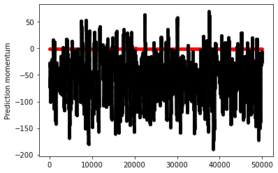
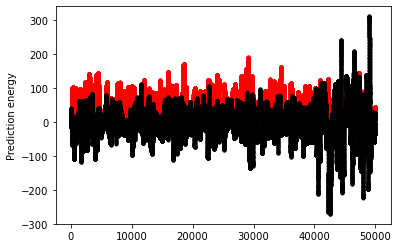
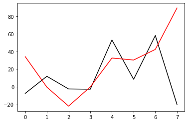
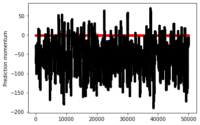
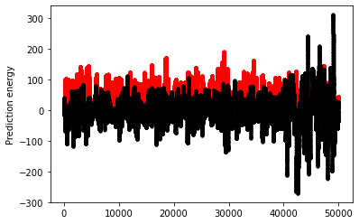
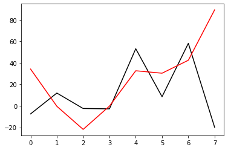
gcm_nn5 = GCM_network_S(Forcing, nn_3l_loss5)
xnn5, tnn5 = gcm_nn5(init_cond, dt, int(T / dt), nn_3l_loss5)
gcm_nn5_x10 = GCM_network_S(Forcing_x10, nn_3l_loss5)
xnn5_x10, tnn5_x10 = gcm_nn5_x10(init_cond, dt, int(T / dt), nn_3l_loss5)
CompExps(
[t2d, x2d, "2d"],
[
[tnn5, xnn5, "1d w/ rescaled NN enrgy."],
],
)

CompExps(
[t2d, x2d, "2d"],
[
[tnn5_x10, xnn5_x10, "1d w/ rescaled NN enrgy."],
],
)
WT = 5
torch.manual_seed(14) # For reproducibility
nn_3l_loss6 = Net_ANN().double()
n_epochs = 50 # Number of epocs
optimizer = optim.Adam(nn_3l_loss6.parameters(), lr=0.01)
validation_loss = list()
train_loss = list()
# time0 = time()
for epoch in range(1, n_epochs + 1):
train_model2(nn_3l_loss6, my_loss3, loader, optimizer)
train_loss.append(test_model2(nn_3l_loss6, my_loss3, loader, optimizer, "train"))
validation_loss.append(test_model2(nn_3l_loss6, my_loss3, loader_test, optimizer))
plt.plot(train_loss, "b", label="training loss")
plt.plot(validation_loss, "r", label="validation loss")
plt.legend();
train loss: 1.6670244031318098
validation loss: 1.6169808597865494
train loss: 1.2733193764897834
validation loss: 1.429655216126067
train loss: 1.1611719911257845
validation loss: 1.3392075945638213
train loss: 0.9882299755031727
validation loss: 1.2606370151935224
train loss: 0.9330834847969373
validation loss: 1.1915211785409252
train loss: 0.8593020412617743
validation loss: 1.1732642900748762
train loss: 0.8252283850143766
validation loss: 1.1785956411334026
train loss: 0.8021176446651618
validation loss: 1.186613968152743
train loss: 0.8101464598994956
validation loss: 1.246393595311505
train loss: 0.7717795630389455
validation loss: 1.141093198424709
train loss: 0.8134263662898462
validation loss: 1.2113765952925197
train loss: 0.7351982002759915
validation loss: 1.171073626020301
train loss: 0.7080299670989753
validation loss: 1.1485954991234824
train loss: 0.7227222047724092
validation loss: 1.1771556523817996
train loss: 0.7330381393766325
validation loss: 1.2215120814403466
train loss: 0.6956562953678641
validation loss: 1.1061602630192713
train loss: 0.715089869695125
validation loss: 1.1338153908447801
train loss: 0.7105928860606678
validation loss: 1.269144706019221
train loss: 0.6621330140148288
validation loss: 1.1572699834496485
train loss: 0.6538716142738558
validation loss: 1.1650374698548107
train loss: 0.6608886484201282
validation loss: 1.2146379237569869
train loss: 0.6436849814056356
validation loss: 1.2700434414644666
train loss: 0.6723693101163359
validation loss: 1.3155535013128212
train loss: 0.6446101276819792
validation loss: 1.2382534111133743
train loss: 0.6194371890315774
validation loss: 1.207581707074897
train loss: 0.5962306700034461
validation loss: 1.277881822398663
train loss: 0.6116609331235899
validation loss: 1.311113415182177
train loss: 0.6791930929325752
validation loss: 1.5109090155459426
train loss: 0.6247983160712619
validation loss: 1.3137692270042565
train loss: 0.6421784524795742
validation loss: 1.3782775139368586
train loss: 0.5677033204337217
validation loss: 1.2625605534320912
train loss: 0.5967672233504782
validation loss: 1.2627077837629406
train loss: 0.6307024833623183
validation loss: 1.250025031010369
train loss: 0.5716310863928775
validation loss: 1.3601715658513307
train loss: 0.5467139841393232
validation loss: 1.291177310923881
train loss: 0.6798812663559262
validation loss: 1.3725201646217902
train loss: 0.5441377324101804
validation loss: 1.3642633084132028
train loss: 0.5662118702340133
validation loss: 1.2585437847161969
train loss: 0.5719882814037438
validation loss: 1.3886452097675606
train loss: 0.5886527011205016
validation loss: 1.4670375013432837
train loss: 0.5454758737081803
validation loss: 1.3165526472435414
train loss: 0.5872649894835438
validation loss: 1.4834143698424902
train loss: 0.5641524028805293
validation loss: 1.362509571585049
train loss: 0.5742942669996375
validation loss: 1.4701774044226437
train loss: 0.5536063647503969
validation loss: 1.3586348016149967
train loss: 0.5746296627192387
validation loss: 1.4105242065544161
train loss: 0.567330664144497
validation loss: 1.3458141515194355
train loss: 0.5781236602067467
validation loss: 1.4395099076852433
train loss: 0.5277429408858894
validation loss: 1.4270772097616675
train loss: 0.597528875205266
validation loss: 1.6709116598727825
# The neural network does a pretty good job predicting the advection tendencies
preds22o = nn_3l_loss5(torch.from_numpy(np.array(X_S)).double())
preds22 = nn_3l_loss6(torch.from_numpy(np.array(X_S)).double())
plt.figure()
plt.plot(preds22.detach().numpy()[0:, 2], label="NN Predicted values")
plt.plot(Adv_S[:, 2], label="True values")
plt.legend()
plt.figure()
plt.plot(Adv_S[:, 2], preds22.detach().numpy()[0:, 2], "k.")
plt.xlabel("Actual")
plt.ylabel("Prediction")
plt.figure()
plt.plot(np.sum(preds22o.detach().numpy(), axis=1) * ScA, "r.")
plt.plot(np.sum(preds22.detach().numpy(), axis=1) * ScA, "k.")
plt.ylabel("Prediction momentum")
plt.figure()
plt.plot(np.sum(X * preds22o.detach().numpy(), axis=1) * ScA, "r.")
plt.plot(np.sum(X * preds22.detach().numpy(), axis=1) * ScA, "k.")
plt.ylabel("Prediction energy")
Xt = init_cond
Advr = -np.roll(Xt, 1) * (np.roll(Xt, 2) - np.roll(Xt, -1))
nnAdv = nn_3l_loss6(torch.from_numpy(np.array(Xt / Forcing)).double()).detach().numpy()
plt.figure()
plt.plot(Advr, "k-", label="actual")
plt.plot(nnAdv * Forcing**2, "r-", label="predicted")
pass;
gcm_nn6 = GCM_network_S(Forcing, nn_3l_loss6)
xnn6, tnn6 = gcm_nn6(init_cond, dt, int(50 / dt), nn_3l_loss6)
gcm_nn6_x10 = GCM_network_S(Forcing_x10, nn_3l_loss6)
xnn6_x10, tnn6_x10 = gcm_nn6_x10(init_cond, dt, int(5 / dt), nn_3l_loss6)
CompExps(
[t2d, x2d, "2d"],
[
[tnn6, xnn6, "1d w/ rescaled NN enrgy 20"],
],
)
CompExps(
[t2d_x10, x2d_x10, "2d"],
[
[tnn6_x10, xnn6_x10, "1d w/ rescaled NN enrgy 20"],
],
)
/net2/bgr/anaconda3/envs/ML/lib/python3.7/site-packages/numpy/core/fromnumeric.py:87: RuntimeWarning: invalid value encountered in reduce
return ufunc.reduce(obj, axis, dtype, out, **passkwargs)
/net2/bgr/anaconda3/envs/ML/lib/python3.7/site-packages/ipykernel_launcher.py:13: RuntimeWarning: overflow encountered in square
del sys.path[0]